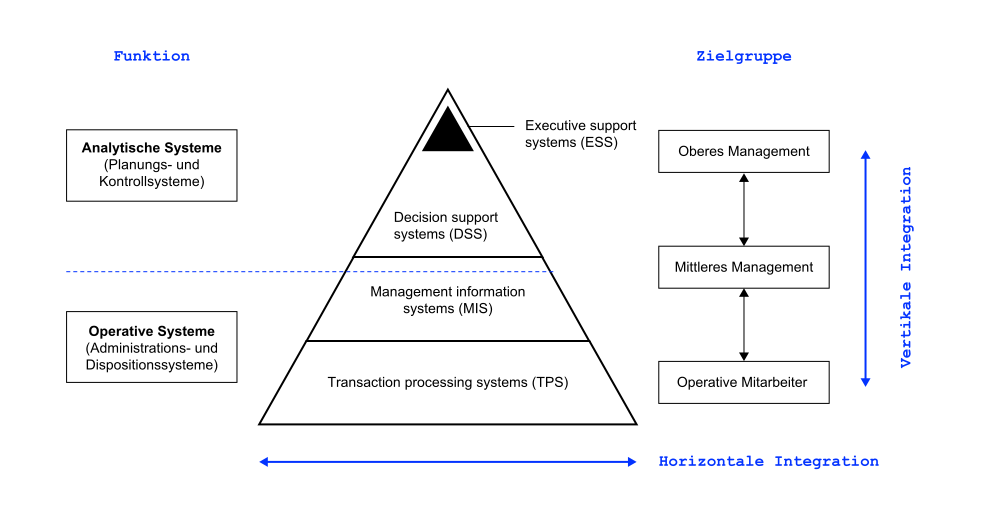

K6 Anwendungssysteme
Grundzüge Informationsmanagement (GIM)
Motivation
Zu den gewaltigen Kosten für die Softwareumstellung als solche kommen jeden Tag neue für Fehlersuche und Problembeseitigung. Ernst Prost (2019), Geschäftsführer der Liqui Moly GmbH in Ulm
Damit das nicht passiert, müssen die passenden Anwendungssysteme ausgewählt und an die Geschäftsprozesse angepasst werden (und/oder vice versa). Welche Anwendungssystemklassen in Unternehmen eingesetzt werden, behandelt dieses Kapitel.
Lernergebnisse
Nach dieser Einheit
- können Sie den Begriff Anwendungssystem erläutern und vom Begriff Informationssystem abgrenzen,
- sind Sie in der Lage, betriebliche Anwendungssysteme nach unterschiedlichen Kriterien zu klassifizieren,
- können Sie beschreiben, wie die Anwendungssystem-Kategorien ERP, SCM und BI aufgebaut sind und welchem Zweck diese jeweils dienen,
- sind Sie in der LAge, den Begriff Business Intelligence (BI) zu erläutern und die Komponenten eines BI-Systems zu beschreiben und
- kennen Sie die Argumente für und wider Individual- und Standardsoftware.
Wiederholung: IS
Einordnung
Informationssysteme (IS) unterstützen die Sammlung, Strukturierung, Verarbeitung, Bereitstellung, Kommunikation und Nutzung von Daten, Informationen und Wissen (Lemke und Brenner 2015).
Sie tragen zur Entscheidungsfindung, Koordination, Steuerung und Kontrolle von Wertschöpfungsprozessen sowie deren Automatisierung, Integration und Virtualisierung bei (Lemke und Brenner 2015).
Anwendungssysteme (englisch „Software“) sind in der Regel Teil eines Informationssystems.
Visualisierung

Anwendungssysteme
Definition
Als Anwendungssystem (AS) werden alle Programme und Daten, die (betriebliche) Aufgabenstellungen unterstützen, bezeichnet (Lemke und Brenner 2015).
In Kombination mit der Benutzerschnittstelle oder dem User Interface (UI) ist das Anwendungssystem ein technischer Teil eines (betrieblichen) Informationssystems (Lemke und Brenner 2015).
Anwendungssysteme werden verkürzt als Anwendung bezeichnet. Oft spricht man auch von „Applikation“ (Englisch „business application“ oder nur „application“). „App“ ist die Kurzform von Applications und wird oft im Zusammenhang mit mobilen Plattformen verwendet (bspw. Apps für das Smartphone, die über „App Stores“ geladen werden) (Abts und Mülder 2017).
Betriebliche AS
Betriebliche Anwendungssysteme unterstützen die Anwender innerhalb eines Unternehmens bei der Durchführung ihrer Aufgaben.
Anwendungen bilden dabei die Geschäftslogik bzw. die fachlichen Funktionszusammenhänge ab, die durch die Geschäftsprozesse definiert und repräsentiert werden (Alpar u. a. 2019).
In modernen Unternehmen werden fast alle Prozesse durch Anwendungssysteme unterstützt.
Beispiele

Einsatzzweck

Operative Anwendungssysteme
Anwendungssysteme, die die täglichen, für den Geschäftsbetrieb notwendigen Routinetransaktionen ausführen und aufzeichnen; diese Systeme werden auf der operativen Ebene eines Unternehmens eingesetzt.
Diese Systeme unterstützen das tägliche Geschäft der Anwender (Lagerhaltung, Buchhaltung, Kundenbetreuung, etc.) dienen der effizienten Gestaltung von Geschäftsprozessen stellen eine integrierte Datenbasis bereit, bestenfalls unternehmensweit vermindern bzw. vermeiden von Bearbeitungsfehler (bspw. durch Plausibilitäts-Prüfungen, Beseitigung von Medienbrüchen und unnötigen Bearbeiterwechsel) erhöhen die Abwicklungssicherheit und Transparenz (bspw. durch „harte“ Freigaben und Protokollierung aller relevanten Sachtatbestände inkl. Zeitpunkt und ausführendem Mitarbeiter)
Informationseingabe
- Transaktionen
- Ereignisse
Aufbereitung
- Listen erstellen, sortieren und zusammenführen von Informationen
- Aktualisieren
Informationsausgabe
- Detaillierte Berichte
- Listen und Übersichten
Make or Buy
Für viele Bereiche sind Anwendungen am Markt erhältlich, mit der die fachlichen Anforderungen vieler Unternehmen abgedeckt werden können — sogenannte Standardsoftware (Mertens u. a. 2016).
Sind die Anforderungen des Unternehmens sehr spezifisch, so muss die Standardsoftware modifiziert bzw. erweitert werden.
Ist das nicht möglich, ist die Entwicklung eines unternehmensspezifischen Anwendungssystems erforderlich — sogenannte Invidualsoftare (Mertens u. a. 2016).
Einführung und Betrieb von Standardsoftware sind in der Regel mit weniger Risiken behaftet:
- Niedrigere und besser kalkulierbare Kosten und höhere Investitionssicherheit
- Möglichkeiten zur Evaluierung vor Einführung
- Höhere Qualität (Reife, Stabilität und Skalierbarkeit, Standardkonformität)
- Abbildung von Best-Practice Prozessen
Auf der anderen Seite kann Individualsoftware besser auf die Unternehmensbelange zugeschnitten werden. So können bspw. spezifische Prozesse, die eine Basis für Wettbewerbsvorteile darstellen, unterstützt werden.